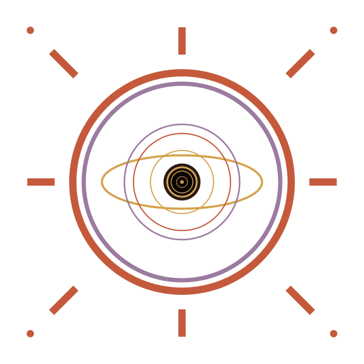
THERAPŌN忒拉蓬出品的语言学习产品，从工作室到技术内核，三层希腊语命名体系：
日轮中心不再是说话口型，而是同心圆吸积盘 + 黑洞 —— 太阳神的后花园里藏着一个深渊。保留 8 射线日轮 + 粗外圆 + 紫环 stroke-width=7 + 金色椭圆 stroke-width=3.5 + 5 层同心圆吸积盘 + 黑洞 r=24 + 四角邮戳点。
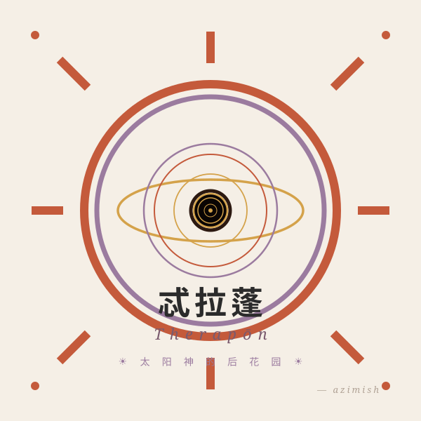
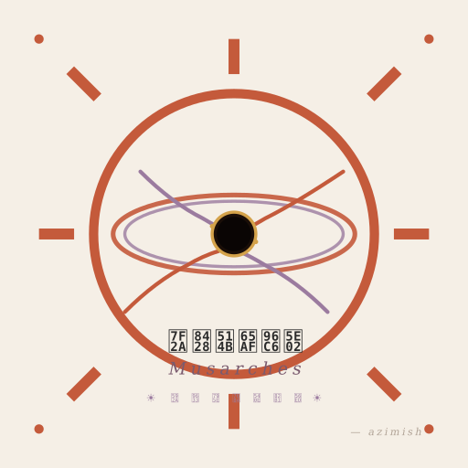
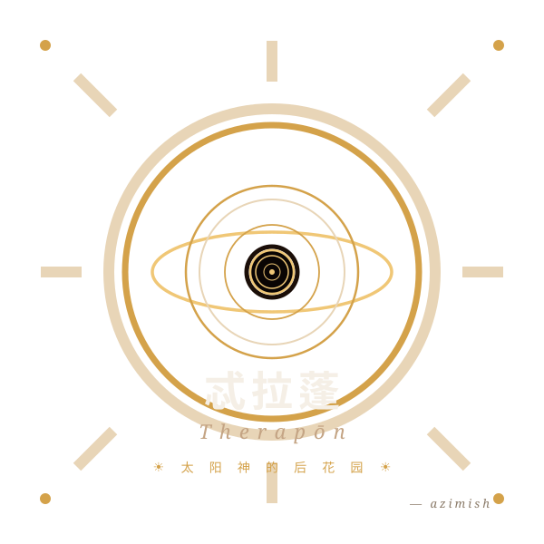
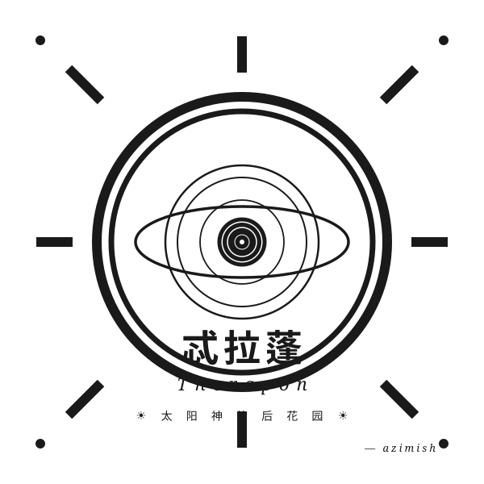
用于 favicon、app icon、页脚署名等不需要品牌名的场景。六套 SVG 全部透明底，可随意贴到任何背景上。
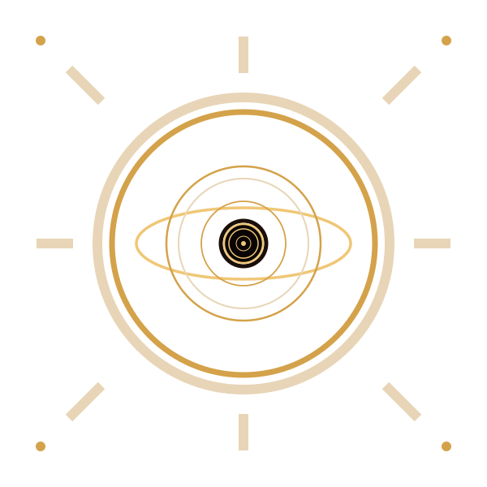
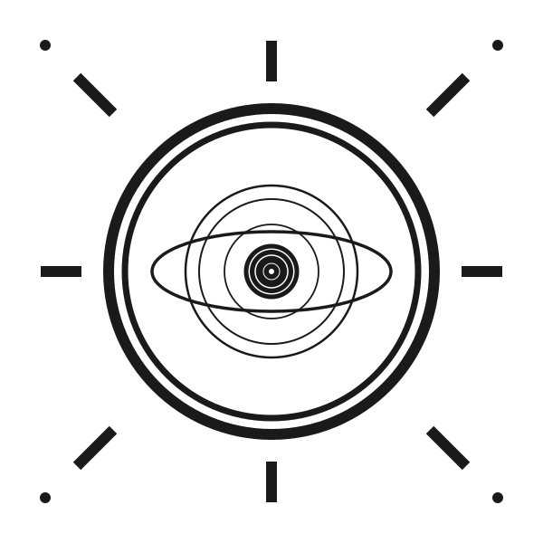
保留供参考。新设计采用 5 层同心圆 + 紫环 + 金色椭圆 + 黑洞的规整结构，替代了旧版漩涡螺旋旋臂。
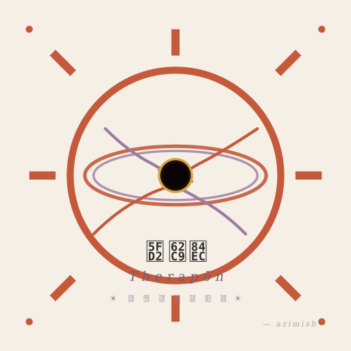
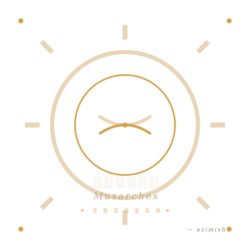
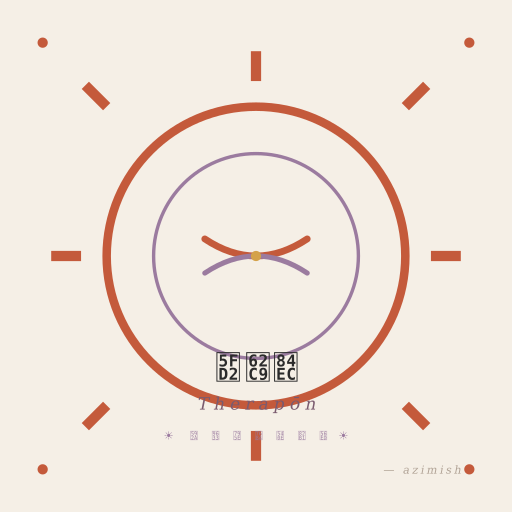
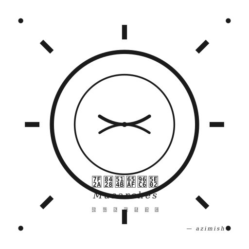
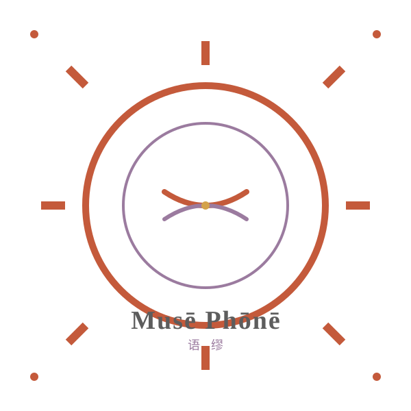
缪斯的大祭司侍从团 —— 不是造机器，是搭一个让缪斯愿意驻留的帐篷。
Therapōn（Θεράπων）= 侍从 / 大祭司的随从。
Musarches（Μουσάρχης）= 缪斯的领袖 / 掌管缪斯的人。
合起来的意象：缪斯的大祭司侍从团 —— 我们是一帮伺候缪斯的人，
工具只是手段，真正要做的是让缪斯愿意来、愿意唱歌、愿意被倾听。
Mus- 来自缪斯（Μοῦσα），-arches 来自 ἀγορά（集市 / 广场）。
为什么是集市？因为语言学习不该是一间孤零的教室，它应该像一个摊点铺开、人声熙攘的广场 ——
你可以这个摊位听日语歌，那个摊位做法语游戏，另一个摊位读德语诗。
Musē（Μοῦσα）= 缪斯，Phōnē（Φωνή）= 声音 / 语言 / 音调。
我们的技术内核 —— 让语言像缪斯的歌声一样被你听到。
不是应试教育里的"语言知识"，而是有温度的、能触动你的声音。
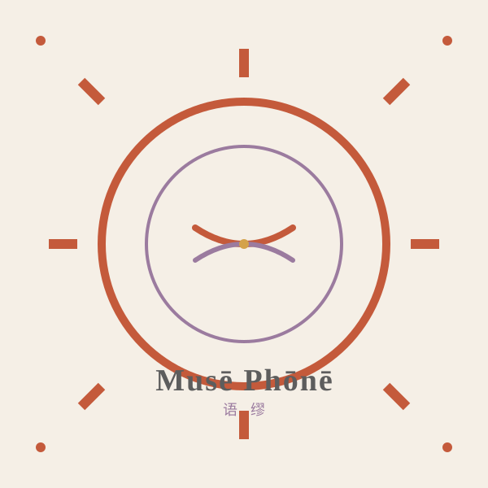
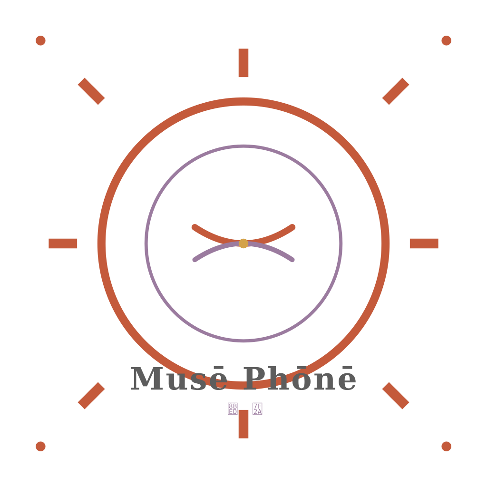
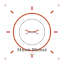
所有资源放在 /assets/brand/，直接点链接下载：